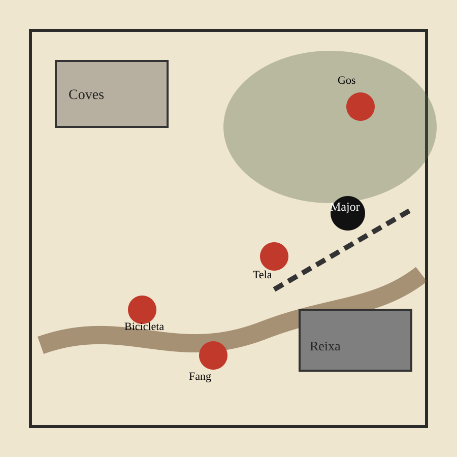
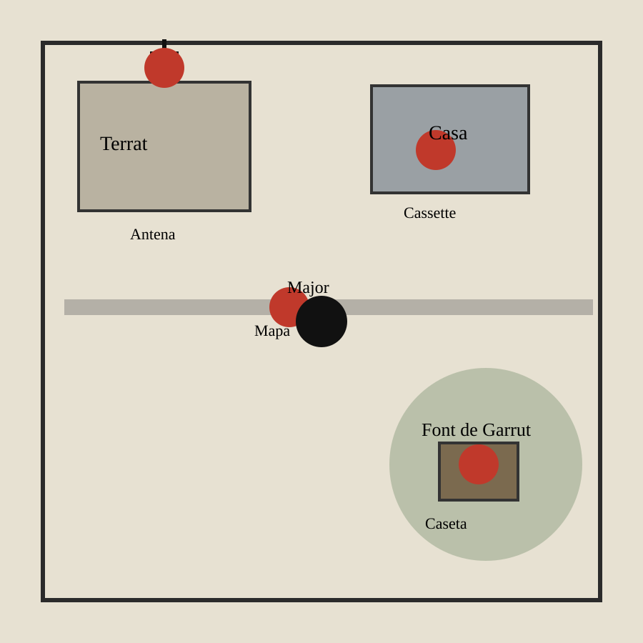
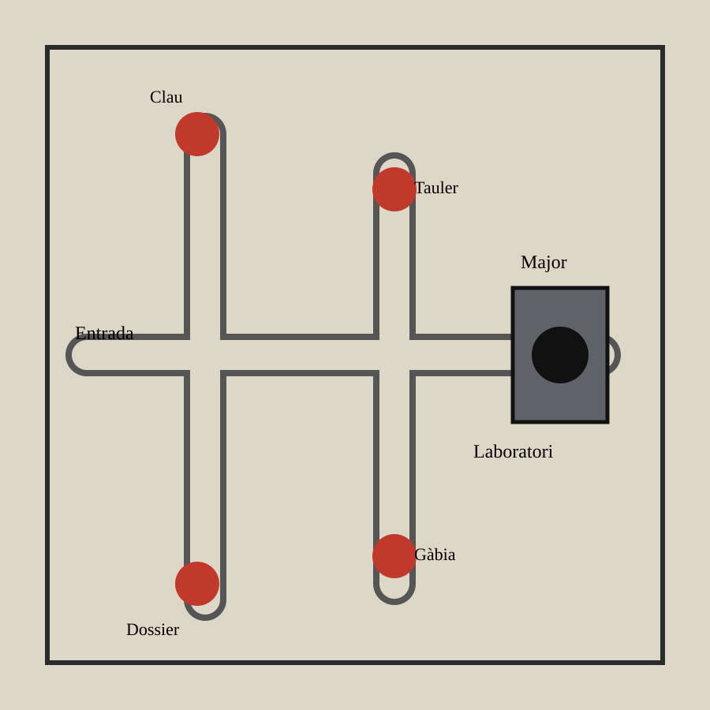
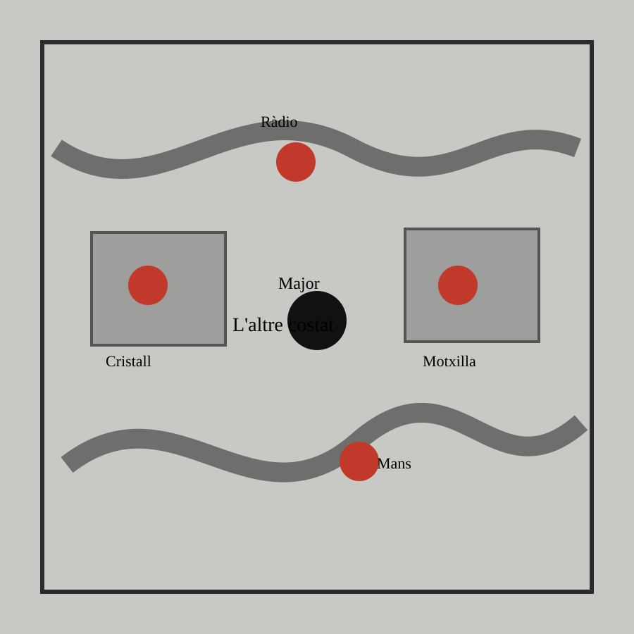
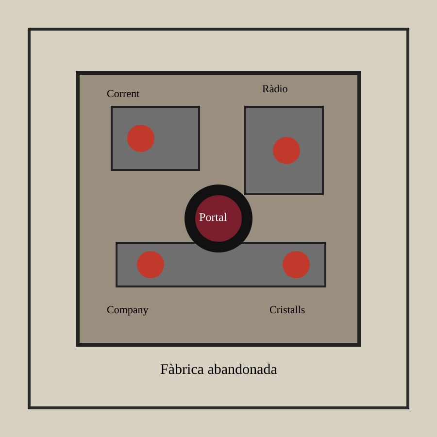

Pulp Alley - Campanya cooperativa local - Tardor de 1986
Les Ombres de Sant Josep
Una campanya de misteri a La Vall d'Uixó per a 2-5 xiquets amb bicicletes
Durant setmanes, la gent de La Vall parla de llums estranyes prop de les Coves de Sant Josep. Alguns animals apareixen morts o canviats. Una nit, després d'una excursió escolar, un company desapareix i la seua bicicleta apareix abandonada prop de l'entrada de les coves. Els adults diuen que són imaginacions. Vosaltres sabeu que no.
Premissa
Esta campanya substitueix Hawkins per La Vall d'Uixó. Manté el sabor de colla de xiquets, bicicletes, misteri, ràdios casolanes i criatures de l'altre costat, però amb llocs reconeixibles: les Coves de Sant Josep, la Font de Garrut, camins de muntanya, una fàbrica abandonada i una escola de barri.
No necessiteu exèrcits ni herois carregats d'equip. Una colla de 4-5 xiquets, unes bicicletes, dos adults sospitosos i cinc criatures són suficients per a jugar tota la temporada.
Com jugar-ho en Pulp Alley
La campanya està pensada com a Pulp Alley cooperatiu. Cada jugador controla un xiquet o xiqueta. Si jugueu menys persones, repartiu la colla entre els jugadors. El director de joc pot portar amenaces, pistes i rellotges d'escena; si voleu jugar sense director, feu que les amenaces actuen com NPCs.
La colla funciona com una sola league de 10 slots. Per mantindre el to de xiquets normals, usem la perk Mastermind: no hi ha Leader de nivell 4. El Líder de la colla és un Sidekick gratuït que fa de Leader durant els escenaris, i la resta són Allies o Followers. Això fa una colla vulnerable, ràpida i centrada en plot points.
Estructura d'un episodi
- Taula recomanada: 3' x 3'.
- Duració: 6 torns.
- Plot points: 1 major i 4 menors.
- Desplegament: segons l'episodi.
- Recompenses: 5 cartes de Reward.
- Opcional: 1 spoiler si voleu més sorpresa.
To de partida
- Els protagonistes són xiquets normals.
- Les baralles són últim recurs.
- Fugir, amagar-se, parlar i investigar és jugar bé.
- Una derrota significa separació, por, perdre una pista o que el portal avance.
Regla d'or
- Usa les regles normals de Pulp Alley per moviments, perills, challenges, plot points i combats.
- Les regles d'esta campanya només expliquen escena, pistes i conseqüències.
- Si una escena es complica massa per a un xiquet, converteix combat en persecució.
- Les armes dels xiquets són simbòliques: llanternes, pedres, walkie-talkies, motxilles i bicicletes.
Regles locals de campanya
Horror suau
- Les criatures i el portal són horrific.
- Useu Horror només quan aparega una criatura o una escena molt forta.
- Si no teniu Horror Deck, una fallada causa una condició narrativa: espantat, separat, bloquejat o veu estranya.
- L'efecte dura fins al final del torn o fins que un company faça una acció d'ajuda.
NPCs
- Els NPC no juguen cartes ni poden ser Director.
- Activen després dels personatges.
- Primer activen els NPC en contacte; després els altres aleatòriament.
- Si poden, ataquen el personatge més proper.
- Si no poden atacar, avancen cap al plot point major o fan soroll.
Bicicletes com muntures
- Tracteu-les com una mount Single-Rider.
- Avantatge principal: moure fins a 16".
- No permeten accions mentre es va muntat.
- Caure de la bicicleta és un peril.
- Una bicicleta solta es queda quieta i pot convertir-se en plot point.
Full de temporada
Marqueu estes caselles durant la campanya. Serviran per a obrir un segon arc si vos agrada.
Pistes principals
- Bicicleta trobada.
- Missatge de ràdio complet.
- Entrada oculta localitzada.
- Mostra de cristall negre recuperada.
- Nom de la fàbrica abandonada descobert.
Conseqüències
- Un adult vos creu.
- Un agent vos ha vist la cara.
- La criatura gran està ferida.
- La Sensitiva ha sentit el portal.
- El company desaparegut ha tornat canviat.
Rellotge del portal
- Comença a 0.
- Puja +1 si falleu un episodi.
- Puja +1 si abandoneu una pista clau.
- Amb 3, hi ha més criatures menudes.
- Amb 5, la criatura gran pot travessar en l'episodi final.
Guia per al primer dia
Esta campanya assumeix que no heu jugat mai a Pulp Alley. No cal llegir tot el manual abans de començar. Per al primer episodi només necessiteu moure, investigar pistes, resoldre perills i entendre què passa quan algú falla.
Prepareu només açò
- Les 5 fitxes de la colla.
- 5 marcadors de pista: P1, P2, P3, P4 i Major.
- 5 bicicletes o marcadors de bicicleta.
- 6-8 peces de terreny: arbres, tanca, camí, entrada de cova i roques.
- Daus d6, d8, d10 i d12.
- Baralla Fortune. Si encara no la teniu, useu cartes normals només per traure números i reptes senzills.
Regles mínimes
- Cada dau que trau 4+ és un èxit.
- Un personatge activa una vegada per torn.
- En activar, pot moure fins a 12".
- Si mou més de 6", no pot investigar.
- Investigar una pista és una acció.
- Abans d'investigar una pista, sempre hi ha un peril.
Ignoreu al principi
- Experiència i reputació fins acabar l'episodi 1.
- Assets avançats.
- Secret societies.
- Vehicles normals.
- Bursts.
- Horror Deck complet si no el teniu.
La seqüència que heu de repetir
Poseu esta llista al costat de la taula. És suficient per jugar el primer episodi.
1. Trieu qui activa
En cooperatiu, trieu el personatge que tinga més sentit. Si voleu usar el Director com diu el manual, el Director decideix quin jugador activa. Per a la primera partida, no vos compliqueu.
2. Mou
- A peu: fins a 12".
- Amb bicicleta: fins a 16".
- Si mou més de 6", no pot fer accions.
- Si toca una zona perillosa, resol un peril.
3. Fes una acció
- Investigar una pista.
- Amagar-se.
- Ajudar un company.
- Parlar amb un adult.
- Atacar només si és inevitable.
Plot points sense embolics
En esta campanya, un plot point és una pista important. La bicicleta, una nota, una porta, un cristall o una ràdio són plot points.
Per investigar una pista
- El personatge ha d'arribar fins al marcador.
- No pot haver mogut més de 6" eixe torn.
- Primer resol un peril.
- Si supera el peril, intenta la pista.
- Si supera la pista, agafa una Reward card.
Si falleu
- Si falleu un peril, el personatge rep hits i acaba l'activació.
- Si falleu la pista, no rep hits.
- Els èxits parcials poden quedar acumulats com Long Action.
- Un altre company pot acabar la pista després.
Regla tutorial
En l'episodi 1, una fallada no hauria de deixar ningú fora de la partida. Convertiu-la en una complicació: el guarda s'acosta, cau una llanterna, es perd una motxilla o el gos comença a bordar.
La colla protagonista
Cada personatge és un perfil jugable de Pulp Alley 2E. La colla completa usa la perk Mastermind: el Líder és un Sidekick gratuït que fa de Leader, i la resta ocupen slots normals. Total ocupat: 10 slots.
El Líder
- Inspiració: Mike.
- Rol Pulp Alley: Sidekick que fa de Leader per Mastermind.
- Health: d8.
- Brawl: 2d6. Shoot: no-dice. Dodge: 3d8.
- Might: 2d6. Finesse: 3d8. Cunning: 3d8.
- Habilitats: Aid, Plan.
- Paper: coordina, anima i ajuda a superar challenges.
El Cerebrito
- Inspiració: Dustin.
- Rol Pulp Alley: Ally, 2 slots.
- Health: d6.
- Brawl: no-dice. Shoot: 1d6. Dodge: 2d6.
- Might: 1d6. Finesse: 2d6. Cunning: 3d6.
- Habilitat: Brainy.
- Paper: ràdios, codis, cables, mapes i enigmes.
El Deportista
- Inspiració: Lucas.
- Rol Pulp Alley: Ally, 2 slots.
- Health: d6.
- Brawl: 2d6. Shoot: no-dice. Dodge: 3d6.
- Might: 2d6. Finesse: 1d6. Cunning: 1d6.
- Habilitat: Speedy.
- Paper: persecucions, rescats, salts i maniobres físiques.
La Valenta
- Inspiració: Max.
- Rol Pulp Alley: Ally, 2 slots.
- Health: d6.
- Brawl: 1d6. Shoot: no-dice. Dodge: 3d6.
- Might: 1d6. Finesse: 3d6. Cunning: 1d6.
- Habilitat: Daredevil.
- Paper: riscos, bicicleta, entrar primer i eixir corrent.
La Sensitiva
- Inspiració: Eleven/Will.
- Rol Pulp Alley: Ally, 2 slots.
- Health: d6.
- Brawl: no-dice. Shoot: no-dice. Dodge: 2d6.
- Might: 2d6. Finesse: 2d6. Cunning: 2d6.
- Habilitat: Insight.
- Paper: pressentiments, visions, sorolls impossibles i pistes del portal.
Bicicletes
- Regla: mount Single-Rider per a cada xiquet.
- Moviment: fins a 16".
- Limitació: no es poden intentar plot points mentre es va muntat.
- Perill: baixar en marxa o travessar terreny difícil ràpid causa peril.
- Pista: una bicicleta abandonada sempre és un plot point o un spoiler.
Lliga resumida
Les Ombres de Sant Josep
- Perk: Mastermind, 1 slot.
- Leader de scenario: El Líder, Sidekick gratuït.
- Colleagues: Cerebrito, Deportista, Valenta, Sensitiva.
- Slots ocupats: 1 perk + 4 Allies x 2 slots = 9 slots.
- Slot lliure recomanat: Associate.
Associate recomanat: La Mestra
- Slots: 1.
- Abilities: Research & Rumors, In the Know.
- Ús narratiu: dona mapes antics, records d'excursions escolars i rumors que els adults no volen contar.
Escenografia mínima
Imprimir miniatures
- 5 xiquets o xiquetes.
- 5 bicicletes.
- 2 agents o adults sospitosos.
- 4 criatures menudes.
- 1 criatura gran tipus demogorgon.
Imprimir o fabricar escenografia
- Arbres i roques.
- Tanques i murs baixos.
- Entrada de cova.
- Caseta elèctrica.
- Antena de ràdio.
- Portal o esquerda.
Reutilització
- Escola = taules, murs i pati.
- Font de Garrut = arbres, roques i caseta.
- Coves = murs, passadissos i cristalls.
- Fàbrica = les mateixes parets amb caixes.
- Upside Down = tot igual, però amb arrels, grisos i boira.
Kit de pistes per imprimir
Podeu jugar amb paper retallat. Feu tokens numerats i reveleu-los quan els xiquets arriben o resolguen un repte.
Tokens útils
- P1-P6: pistes.
- R1-R3: parts de ràdio.
- C1-C4: cristalls negres.
- B1-B5: bicicletes.
- X: portal o esquerda.
Escape room de taula
- Missatges invertits.
- Mapes incomplets.
- Codis de tres xifres.
- Paraules amagades en una nota.
- Ràdio que només funciona en un lloc concret.
Temps de preparació
- Sessió 1: 45 min per preparar colla i tokens.
- Cada episodi: 10-15 min per muntar taula.
- Tot l'arc: 5 episodis de 45-75 min.
Episodi 1: La bicicleta abandonada
Un company de classe no torna a casa després d'una excursió prop de les Coves de Sant Josep. A la vesprada, algú troba la seua bicicleta darrere d'una tanca, amb la roda davantera encara girant i fang negre als pedals.

Escenari Pulp Alley
- Base: The Trail of Clues.
- Players/League: 1 league cooperativa.
- Plot points: 1 major + 4 menors.
- Deployment: Corners 12".
- Turn limit: 6.
- Rewards: 5 Reward cards.
- Spoiler opcional: Red Herring.
Plot points
- Major: túnel ocult darrere de la reixa.
- Menor: bicicleta abandonada.
- Menor: petjades de fang negre.
- Menor: tros de tela enganxat.
- Menor: gos que gruny al bosc.
Amenaces
- 1 gos estrany com Level 1 Animal NPC.
- 1 guarda municipal com Level 1 Brawler NPC.
- Una ombra no combat: només causa Horror si algú s'acosta al túnel.
Tutorial pas a pas
- Torn 1: activeu només la colla. Moveu cap a la bicicleta i les petjades. No feu aparéixer cap criatura encara.
- Primera pista: useu la bicicleta com primer plot point. Expliqueu peril, challenge i Reward card amb calma.
- Torn 2: entra el guarda. No ataca; pregunta què feu allí i bloqueja un camí.
- Primer problema: si algú falla, no el deixeu fora de joc. Feu que perda temps, cride l'atenció o quede separat.
- Final: quan resolgueu dues pistes menors, reveleu el túnel ocult com plot point major.
Pista escape room
La bicicleta té tres adhesius: una lluna, una ona i un número pintat. El número no obri res fins que els jugadors ordenen els adhesius segons el mapa escolar: riu, cova, muntanya. Quan ho resolen, poden intentar el plot point major.
Episodi 2: La ràdio impossible
El Cerebrito munta una ràdio amb peces velles, una antena robada d'un transistor i massa cinta aillant. A mitjanit, la ràdio parla sola. La veu sona com el company desaparegut, però les paraules estan al revés.

Escenari Pulp Alley
- Base: The Sign of Four.
- Players/League: 1 league cooperativa.
- Plot points: 1 major + 4 menors.
- Deployment: Scattered.
- Turn limit: 6.
- Rewards: 5 Reward cards + 1 Red Herring.
- Regla: tots els plot points són no-drop.
Plot points
- Major: origen exacte de la senyal.
- Menor: antena del terrat.
- Menor: cassette amb missatge invertit.
- Menor: mapa de freqüències.
- Menor: caseta elèctrica de la Font de Garrut.
Amenaces
- 2 agents del laboratori com Level 1 Shooter NPCs, però poden ser esquivats.
- 1 zona de llums intermitents com perilous area.
- Si es revela el Red Herring, la senyal canvia de lloc 1d8".
Pista escape room
Doneu als jugadors una frase escrita al revés. Quan la lligen correctament diu: "sota la font, darrere del motor". Si ho resolen, el següent plot point que intenten rep +1 èxit acumulat de Long Action.
Episodi 3: Baix la muntanya
La senyal porta fins a una entrada amagada entre roques. Darrere hi ha passadissos de formigó, tubs rovellats i portes amb símbols que ningú del poble reconeix. La muntanya està buida per dins.

Escenari Pulp Alley
- Base: The Lost Keys.
- Players/League: 1 league cooperativa.
- Plot points: 1 major + 4 menors.
- Deployment: Sides 6".
- Turn limit: 6.
- Rewards: 5 Reward cards.
- Regla: no es pot intentar el major fins tindre un plot point menor.
Plot points
- Major: porta del laboratori ocult.
- Menor: clau oxidada.
- Menor: tauler elèctric.
- Menor: dossier tacat.
- Menor: gàbia trencada.
Amenaces
- 1 criatura menuda com Level 2 Animal NPC.
- 1 agent com Level 2 Shooter NPC.
- Zones de cables i vidres com perilous areas.
Pista escape room
La porta té tres llums: roja, groga i verda. Els documents indiquen tres paraules: "riu", "pedra", "llum". Els jugadors han de posar-les en ordre segons el mapa: riu primer, pedra després, llum al final. Si ho fan, el plot point major requereix un èxit menys.
Episodi 4: L'altre costat
La porta no dona al laboratori. Dona a La Vall, però no és La Vall. Els carrers estan buits, les parets respiren i les arrels pengen dels fanals. La Font de Garrut sona com un riu subterrani dins d'una ràdio trencada.

Escenari Pulp Alley
- Base: Smash & Grab.
- Players/League: 1 league cooperativa.
- Plot points: 1 major + 4 menors.
- Deployment: Corners 12".
- Turn limit: 6.
- Rewards: 5 Reward cards.
- Regla: tota zona d'arrels és perilous i obscuring.
Plot points
- Major: trobar el company desaparegut.
- Menor: cristall negre.
- Menor: motxilla escolar.
- Menor: eco de ràdio.
- Menor: marca de mans a la paret.
Amenaces
- 2 criatures menudes com Level 1 Mindless Minions NPC.
- 1 ombra horrific que no pot ser atacada.
- Si el Rellotge del portal és 3+, afegiu una tercera criatura menuda.
Pista escape room
El company només respon a paraules que recorda. Els jugadors han de dir tres records de campanya: una pista trobada, un lloc visitat i un objecte recuperat. Si ho fan, el major passa a ser no-drop.
Episodi 5: El portal
Tot apunta a la fàbrica abandonada. Les finestres estan tapades, però dins hi ha llum. El portal s'obri i es tanca com una ferida. Si la colla falla esta nit, alguna cosa molt gran entrarà a La Vall.

Escenari Pulp Alley
- Base: The Death Trap.
- Players/League: 1 league cooperativa.
- Plot points: 4 menors + 1 major especial.
- Deployment: el Líder comença separat a 6" del portal; la resta a la cantonada oposada.
- Turn limit: 6.
- Rewards: 5 Reward cards.
- Regla: el portal és el major i només es pot tancar després de passar dos menors.
Plot points
- Major: tancar el portal.
- Menor: tallar corrent.
- Menor: estabilitzar la ràdio.
- Menor: rescatar el company.
- Menor: destruir cristalls negres.
Amenaces
- 1 criatura gran com Epic NPC amb Monster, Big i Predator.
- 2 criatures menudes com Level 1 Mindless NPCs.
- Si el Rellotge del portal és 5, la criatura gran comença en joc.
- Si és menor de 5, entra al final del torn 3.
Pista escape room
Per tancar el portal cal una seqüència de tres paraules. Cada paraula ve d'un episodi anterior: bicicleta, ràdio, cristall. Si els jugadors recorden o consulten les pistes, poden intentar el major. Si fallen, el portal causa un peril a tots els personatges a 6".
Finals de temporada
Portal tancat
La fàbrica queda en silenci. Els adults arriben tard i només veuen vidres trencats, bicicletes tirades i xiquets coberts de pols. Ningú vos creu del tot, però el company desaparegut torna a casa.
Portal inestable
Tanqueu l'esquerda, però alguna cosa queda dins de la muntanya. A la setmana següent, una ràdio escolar emet una veu que diu un nom de la colla.
Portal obert
Sobreviviu, però la criatura travessa. La temporada 2 comença amb animals desapareguts, apagades al poble i agents preguntant massa a prop de l'escola.
Crèdits i ús
Campanya fan-made per a ús personal, inspirada en misteri juvenil dels anys 80 i adaptada a Pulp Alley 2E. Pulp Alley és propietat dels seus autors. La campanya no reprodueix regles completes: cal el manual oficial per jugar.